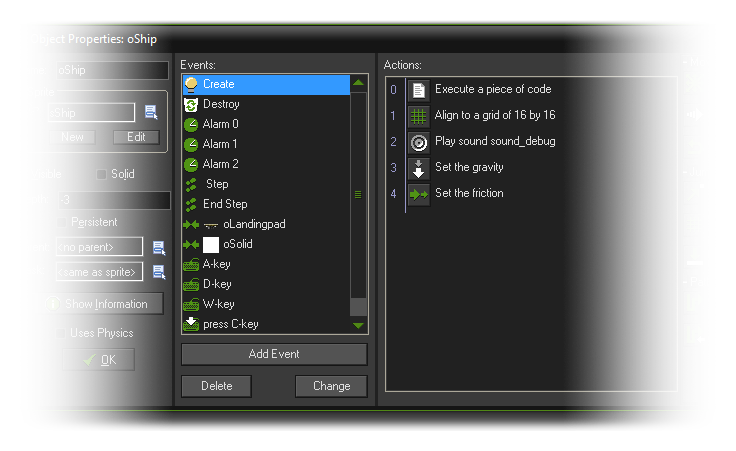
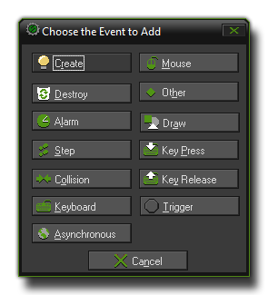

So, what are events? Basically, these are discreet moments in the game loop where things are made to happen based on what you have programmed for them. You see GameMaker:Studio works with
cycles of these events - from the moment a room is started to the moment it is finished there is a game loop running where every step (a step is a moment in game time, governed by the room
speed setting) a series of events are run, and you can choose to place code or DnD actions in your instances that respond to these events. Let's look at a typical object setup with events and actions:

As you can see in our example object there are a number of events listed that it should respond to, but initially when you create an object this list is empty and you must decide which events you need and what
instances of that object should do when those events are triggered. To add events into the object, you press the Add Event button found at the bottom of the events list which will bring up the following
window:

That is the list of all the basic events which an object can respond to, although some of those events also have sub events to further define behaviours. For example, if you add a Key Press event
you will then get a further window popping up with the sub events that allow you to select which key the object should respond to. Once you have selected your event, you can then add your DnD actions or
code into the Actions section on the right of the event list, which means that you are telling GameMaker:Studio that when this event is triggered, these actions should be performed. here is an
example image to illustrate this:
You can change the order of the actions in the list by pressing and holding the left mouse button and then dragging to move the selected DnD action icon. Note that if you hold the <Alt> key while dragging,
you can make a copy of the action. You can even use drag-and-drop between action lists for different objects, either by having them both open and literally dragging the DnD action icons between them, or you can
click with the right mouse button on an action which will open a menu where you can edit, cut, copy, paste and even delete actions (deleting can also be done by using the <Del> key). You can select multiple
actions for cutting, copying, or deleting by holding the <Shift> key or <Ctrl> key and clicking on a series of action icons, and pressing <Ctrl><A> will select all actions. Finally, when you hold
your mouse at rest above an action, a longer description is given of the action in a pop up window so that you can see what it does without actually having to open it.
There are two further buttons available at the bottom of the events list, Delete and Change. As you may well imagine, the Delete button will permanently remove the currently selected
event and all its associated actions from the object (Events without any actions assigned to them will automatically be deleted when you close the form so there is no need to delete them manually). The
Change button can be used to change the current event into another one, and in this way transfer all the associated actions to the new event (if the event you try to change to has already been defined then
nothing will happen). These actions can also be accomplished by simply right clicking on the event and selecting the appropriate choice from the pop up menu that will open.
In this way you can "build" behaviours that are triggered by specific events in your game by just adding in more actions or more code (you are not limited to the amount you can add for each event). If you wish to know
more about all the available actions then you can go to the Actions section of the manual, and the Reference section
has all the information you need on the available code functions.
It should also be noted that the exact order that the events are going to occur in each step cannot be clearly stated, simply because it depends on the internal workings of GameMaker:Studio, which is
subject to change as the software develops. However there are certain events that always run in the same order. The first set of events that will always happen the same way are those that occur when
a room is first entered and the order of events for that is:
Other than those specific events, the only known order that will always occur in the same way no matter what belongs to the three step events and the two draw events. These will always remain consistent, so
if you have code that relies on specific timing during each step of your game, you should use:
- Begin Step Event
- Step Event - The step event is executed just before instances are put in their new positions.
- End Step Event
Two of the three sub events for drawing are also always dealt with in the same order as follows (the Resize event is triggered differently):
- Draw Event
- Draw GUI Event
The sections below deal with each available event :
 Create Event
Create Event
 Destroy Event
Destroy Event
 Alarm Events
Alarm Events
 Step Events
Step Events
Collision Event

 Keyboard Events
Keyboard Events
 Mouse Event
Mouse Event
Other Events
 Draw Events
Draw Events
 Asynchronous Events
Asynchronous Events